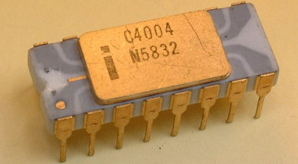
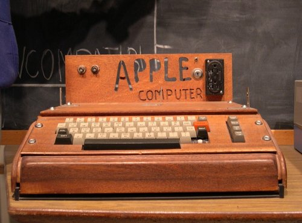

A quarta geração de computadores da o inicio com o aparecimento dos microprocessadores em 1971, a qual
em seguida possibilita a criação dos microcomputadores e os sistemas operacionais para uso pessoal
deles. Surgem também muitas linguagens de programação de alto nível, a teleinformática e a transmissão
de dados através da rede.
Linha do tempo:
(1971) O primeiro microprocessador, a Intel 4004.

Primeiro Microprocessador
(1971) O primeiro e-mail é enviado, com o texto “login”, mas chegou apenas “lo”.
(1971) O primeiro disco magnético flexível ou disquete (floppy disks) foi criado pela IBM.
(1972) É desenvolvida a popular linguagem de programação C, pela Bell Labs.
(1972-73) Surge a Ethernet, o padrão mais utilizado em redes locais (LAN).
(1975) O primeiro microcomputador lançado, Altair 8800. Funcionava através de cartões de
entradas e saída, sem uma interface gráfica.
(1975) Bill Gates e Paul Allen se interessam pelo o Altair e criam a sua linguagem de
programação
Altair Basic. Em seguida eles fundam a empresa da Microsoft.
(1976) É lançado consideravelmente o primeiro computador pessoal Apple I, por Steve Jobs.
Acompanhava um pequeno monitor gráfico que exibia o que estava acontecendo no PC.

Primeiro Computador Pessoal
(1980) Lançamento do Apple III.
(1981) Dá-se inicio ao desenvolvimento do MS-DOS pela Microsoft e é introduzido no primeiro
PC da IBM lançado no mesmo ano, tornando-se o computador mais vendido de toda a história.
(1981) Lançamento dos circuitos ULSI (Circuitos de Escala Ultra Grande) e fim da 4ª Geração
de Computadores, dando inicio a 5ª Geração.